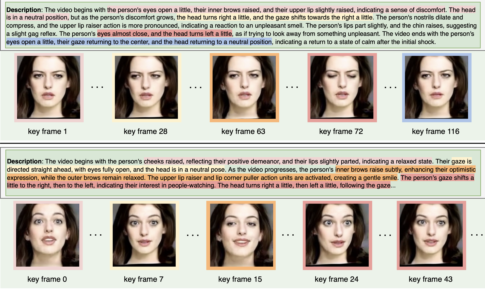

AgentAvatar: Disentangling Planning, Driving and Rendering for Photorealistic Avatar Agents

A showcase example. Our process begins with a high-level description of the environment and avatar, which is input into our LLM-based “planner”. This planner then produces a detailed description of facial motions. These descriptions are subsequently fed into the “driving Engine” and, finally, the “render” outputs photo-realistic video sequences that correspond to the initial inputs.
Abstract
In this study, our goal is to create interactive avatar agents that can autonomously plan and animate nuanced facial movements realistically, from both visual and behavioral perspectives. Given high-level inputs about the environment and agent profile, our framework harnesses LLMs to produce a series of detailed text descriptions of the avatar agents' facial motions. These descriptions are then processed by our task-agnostic driving engine into motion token sequences, which are subsequently converted into continuous motion embeddings that are further consumed by our standalone neural-based renderer to generate the final photorealistic avatar animations. These streamlined processes allow our framework to adapt to a variety of non-verbal avatar interactions, both monadic and dyadic. Our extensive study, which includes experiments on both newly compiled and existing datasets featuring two types of agents – one capable of monadic interaction with the environment, and the other designed for dyadic conversation – validates the effectiveness and versatility of our approach. To our knowledge, we advanced a leap step by combining LLMs and neural rendering for generalized non-verbal prediction and photo-realistic rendering of avatar agents.
Video
Planner, Driving Module and Render Module
LLM-based Planner, which takes the information from both the environment and agent as input and generates the detailed text description of the facial motion for the avatar agent
Our driving module, which converts a detailed textual description into discrete expression and head pose tokens.
llustration of the major components within our render. Audio input enables when agent act as “speaker"
Planning Results and Driving Results
The qualitative results of the planner from (left) DailyDialogue and (right) EnvPersona datasets. AgentAvatar is capable of generating different fine-grained motion description based on the different persona and different environment inputs.
The qualitative result of driving engine. We show two different cases here to demonstrate the text-driven capability of our model. AgentAvatar can translate fine-grained motion description text into motion sequence, and further be rendered to a video.
Conversation Demonstrate of Our System
We here show two conversation demo of the end-to-end system. All the facial motions of each person are generated by our system based on the relationship of two people and the conversation.
Citation
@inproceedings{wang2023agentavatar,
title={Disentangling Planning, Driving and Rendering for Photorealistic Avatar Agents},
author={Wang, Duomin and Dai, Bin and Deng, Yu and Wang, Baoyuan},
journal={arxiv},
year={2023}
}